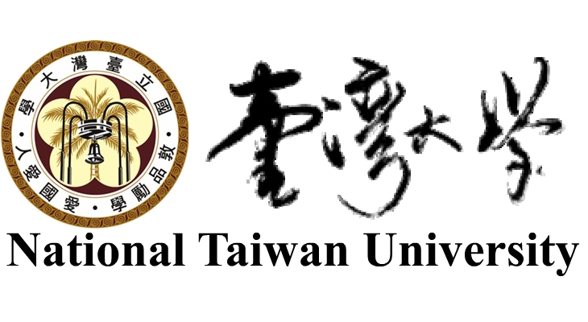

I am a first-year PhD student in Graphics group of Communication and Multimedia Lab (CMLab) under the advisement of Dr. Yung-Yu Chuang at NTU. I am also a research assistant in Research Center for information Technology Innovation under the advisement of Dr. Yen-Yu Lin.
My research interests include Computer Vision, Computational Photography and Machine Learning.
Here is my C.V.
Education

Ph.D, Networking and Multimedia
National Taiwan University, Taipei, Taiwan
Sep. 2014 - present
M.S., Communication Engineering
National Taiwan University, Taipei, Taiwan
Sep. 2012 - Jun. 2014
B.S., Electrical Engineering
National Taiwan University, Taipei, Taiwan
Sep. 2008 - Jun. 2012
Publications

Blur Kernel Estimation Using Color-Line Model For Natural Image Deblurring
M.S. Thesis, National Taiwan University, 2014

High Quality Image Deblurring Scheme Using the Pyramid Hyper-Laplacian L2 Norm Priors Algorithm
Proceedings of Pacific-Rim Conference on Multimedia 2013

Improved structural similarity measurement for vocal signals
IEEE International Symposium on Circuits and Systems (ISCAS) 2013